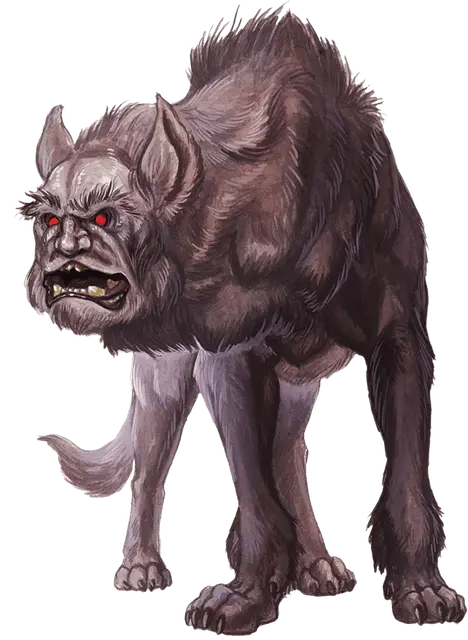

Гончая йет
Yeth Hound
Большая Фея, нейтрально-злая

Класс Доспеха 14 (природный доспех)
Хиты 51 (6к10 + 18)
Скорость 40 футов, летая 40 футов (парит)
| мод | спас | ||
|---|---|---|---|
| СИЛ | 18 | +4 | +4 |
| ЛОВ | 17 | +3 | +3 |
| ТЕЛ | 16 | +3 | +3 |
| мод | спас | ||
|---|---|---|---|
| ИНТ | 5 | −3 | −3 |
| МДР | 12 | +1 | +1 |
| ХАР | 7 | −2 | −2 |
Иммунитет к урону дробящий, колющий, рубящий от немагических атак, кроме нанесённых посеребрённым оружием
Иммунитет к состояниям очарование, испуг, истощение
Чувства тёмное зрение 60 футов, пассивное Восприятие 11
Языки Общий, Эльфийский и Сильван, но не может говорить.
Опасность 4 (1100 опыта)
Бонус мастерства +2
Среда обитания Лес, Луг, Холмы
Особенности
Острый слух и нюх. Гончая йет получает преимущество на проверки Мудрости (Восприятие), опирающиеся на слух и обоняние.
Изгнание солнечным светом. Если гончая йет начинает свой ход в солнечном свете, то она переносится в Эфирный План. Пока солнечный свет светит на месте, из которого она пропала, гончая должна оставаться в Глубоком Эфире. После захода солнца она возвращается к Эфирной Границе в том же месте, после чего она обычно отправляется искать свою стаю или хозяина. Гончая видима на Материальном Плане, пока находится на Эфирной Границе и наоборот, но не может воздействовать или находиться под воздействием чего угодно с другого плана. Когда она оказывается рядом с хозяином или собратом по стае, находящимся на Материальном Плане, гончая йет может действием вернуться из Границы Эфира в Материальный План.
Телепатическая связь. Пока гончая йет находится на одном плане существования со своим хозяином, она может магически передавать то, что чувствует, хозяину, и они могут телепатически общаться друг с другом.
Действия
Укус. . Рукопашная атака оружием: +6 к попаданию, досягаемость 5 футов, одна цель. Попадание: 11 (2к6 + 4) колющего урона плюс 14 (4к6) урона психической энергией, если цель испугана.
Зловещий лай. Гончая йет магически лает. Каждый враг в радиусе 300 футов от гончей, который может его слышать, должен преуспеть в спасброске Мудрости Сл 13 или стать испуганным до конца следующего хода гончей или пока гончая дееспособна. Испуганная цель, которая начинает ход не далее 30 футов от гончей, должна использовать все свое движение в этот ход и уйти как можно дальше от гончей, должна закончить движения до совершения действия и должна выбирать самый прямой маршрут, даже если на пути есть угрозы. Цель, успешно сделавшая спасбросок, получает иммунитет к лаю всех гончих йет на следующие 24 часа.
Описание
Даруемые могущественными феями личностям, которые им угодили, гончие йет служат своим злым мастерам как охотничьи псы. Гончие йет летают, преследуя добычу, и зачастую ждут пока она не выдохнется настолько, что сражаться уже не сможет. Только угроза рассвета заставляет стаю уйти и спрятаться.
Миньоны Темного Хозяина. Стая гончих йет может быть создана могущественной феей, такой как Королева Воздуха и Тьмы. Будучи созданной, стая должна иметь хозяина, обычно того, кого их создатель хочет вознаградить. Хозяин может телепатически общаться с гончими йет и давать им команды издалека. Если хозяин стаи убит, то гончие ищут и выбирают нового, обычно очень злого индивида, такого как вампир, некромант или карга.
Гончая йет около 5 футов в высоту в холке и весит около 400 фунтов. Зачастую в темноте, из–за их меха цвета ночной тьмы, можно увидеть лишь красное свечение их глаз. Голова гончей йет имеет лицо, похожее на человеческое, на более гибкой чем у собак шее. Запах этого существа похож на дым.
Звук Смутной Смерти. Гончие йет издают ужасный лающий звук, который слышно далеко вокруг. Существа, которые могут видеть гончую во время лая, наполняются сверхъестественным ужасом и обычно убегают в страхе. Когда жертва пытается сбежать, гончая наслаждается преследованием и муками добычи перед тем как закончить охоту.
Те же, кто решился стоять и защищаться, обнаруживают, что обычное оружие частично проходит сквозь гончую, как будто она сделана из тумана, однако магическое и серебряное оружие может им навредить.
Сбитые со Следа Солнечным Светом. Гончие йет не выносят солнечного света. Стая никогда по своей воле не продолжит охоту после ночи и всегда хочет вернуться в свою темную берлогу до первых лучей рассвета. Никакое принуждение хозяина стаи не может изменить такое поведение. Если гончая йет окажется на естественном солнечном свету, то она растает и отправится в Эфирный План, откуда хозяин сможет забрать её только после захода солнца.